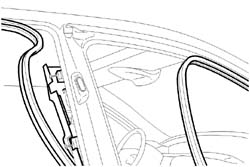
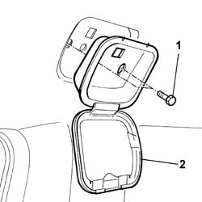
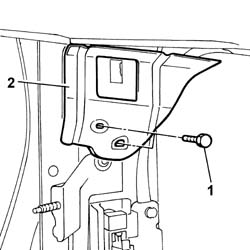
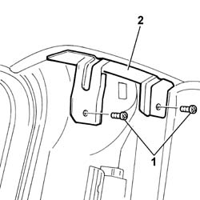
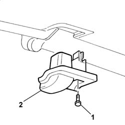
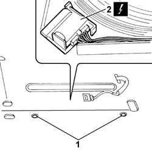
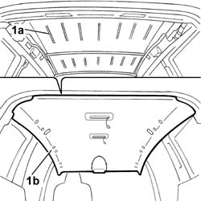

7040H10 ROOF PANEL LINING - R R
- Path
- Procedures > 70 FITTINGS > 7040 BODY INTERIOR FITTINGS AND TRIM > 7040H ROOF PANEL LINING > 7040H10 ROOF PANEL LINING - R R
- Kind
- repair procedure (removal / refitting; the operation number is the code)
- Applies to
- all engines; all production periods
- Interactive page
- https://sloeber94.github.io/elrnDB-fUlss/en/#/179007821
Applies to: all engines; all production periods
 Removing
Removing
 Refitting
RefittingOp. 5530B56 BATTERY DRIP TRAY COVER - R.R.
Disconnect the negative battery terminal.
Op. 7065C30 INTERIOR L/H OR R/H GRAB HANDLE (ONE) - R+R
Repeat the operation for all the handles.
Op. 7040H30 FRONT PILLAR TRIM - R R
Op. 7040H38 CENTRAL PILLAR UPPER ELEMENT - R R
Op. 7040H42 REAR PILLAR TRIM - R R
Op. 7065C68 REAR VIEW MIRROR - R+R
Op. 7065C62 ADDITIONAL INTERIOR REAR VIEW MIRROR - R.R.
Op. 7040E10 FRONT COURTESY LIGHT - R+R
Op. 7040E12 CENTRAL COURTESY LIGHT - R+R
Op. 7040E16 REAR COURTESY LIGHT - R+R
Op. 7040H33 GLASSES HOLDER (1) LH OR RH, ON ROOF TRIM - R R
Op. 7065C34 L/H OR R/H SUN BLIND (ONE) - R+R
Repeat the operation for both the tabs.
- Remove both upper wind seals.
- Partly prise up the seals around the front doors, the side doors and the tailgate to allow the ceiling lining to be detached.

Applies to: all engines; all production periods
1. Undo the retaining bolts.
2. Remove the mouldings.

Applies to: all engines; all production periods
1. Undo the retaining bolts.
2. Remove the fastening brackets on the centre pillars.

Applies to: all engines; all production periods
1. Undo the retaining bolts.
2. Remove the fastening brackets on the rear pillars.

Applies to: all engines; all production periods
1. Undo the retaining bolts.
2. Remove the shields on the hinged opening windows.

Applies to: all engines; all production periods
1. Use an appropriate tool to remove the fastening studs and partly raise the front mat and the rear mat.
Description | Code | Function | |
|---|---|---|---|
. | Knife | 1.878.077.000 | removing lower clips fastening the rear pocket panel |
2. Disconnect the electrical connection for the roof wiring.
- Release the roof wiring from the fastenings on the centre pillar.

Applies to: all engines; all production periods
- Working from the luggage compartment, gently release the ceiling lining.
1. Cut the sealant (1a) using a suitable tool and remove the roof (1b) complete with wiring.

Applies to: all engines; all production periods
- Release the wiring from the retainers on the roof lining.
- Keep the fastenings for the wiring and the courtesy light mountings from the roof lining.
Applies to: all engines; all production periods
Refitting
Removing- Clean any silicon sealant residues from the roof area.
- Apply the silicon sealant to the roof lining.
Component | Type | Description | Classification | Qty. | Application |
|---|---|---|---|---|---|
ROOF PANEL TRIM | silicon sealant | - | - | - | - |
- Position the roof lining complete with wiring on the vehicle.
- Position the mounting brackets on the centre pillars and secure them using the bolts.
- Position the mounting brackets on the rear pillars and secure them using the bolts.
- Fit the fastenings in position and secure them using the bolts.
- Place the shields on the hinged opening windows in position and tighten the fixing bolts.
- Position the roof wiring and secure it to the centre pillar using the special fastenings.
- Connect the electrical connection for the roof wiring.
- Position the front and rear mats and secure them using the special studs.
- Replace the seal around the front doors, side doors and tailgate.
- Fit both upper wind seals.
Op. 7065C34 L/H OR R/H SUN BLIND (ONE) - R+R
Repeat the same operation for both sun roofs.
Op. 7040H33 GLASSES HOLDER (1) LH OR RH, ON ROOF TRIM - R R
Op. 7040E16 REAR COURTESY LIGHT - R+R
Op. 7040E12 CENTRAL COURTESY LIGHT - R+R
Op. 7040E10 FRONT COURTESY LIGHT - R+R
Op. 7065C62 ADDITIONAL INTERIOR REAR VIEW MIRROR - R.R.
Op. 7065C68 REAR VIEW MIRROR - R+R
Op. 7040H42 REAR PILLAR TRIM - R R
Op. 7040H38 CENTRAL PILLAR UPPER ELEMENT - R R
Op. 7040H30 FRONT PILLAR TRIM - R R
Op. 7065C30 INTERIOR L/H OR R/H GRAB HANDLE (ONE) - R+R
Repeat the operation for all the handles.
Connect the negative battery terminal.
Topics linked from this page (13)
- 5530B56 BATTERY DRIP TRAY COVER - R.R.
- 7040E10 FRONT COURTESY LIGHT - R+R
- 7040E12 CENTRAL COURTESY LIGHT - R+R
- 7040E16 REAR COURTESY LIGHT - R+R
- 7040H30 FRONT PILLAR TRIM - R R
- 7040H33 GLASSES HOLDER (1) LH OR RH, ON ROOF TRIM - R R
- 7040H38 CENTRAL PILLAR UPPER ELEMENT - R R
- 7040H42 REAR PILLAR TRIM - R R
- 7040H50 REAR PANEL - R R
- 7065C30 INTERIOR L/H OR R/H GRAB HANDLE (ONE) - R+R
- 7065C34 L/H OR R/H SUN BLIND (ONE) - R+R
- 7065C62 ADDITIONAL INTERIOR REAR VIEW MIRROR - R.R.
- 7065C68 REAR VIEW MIRROR - R+R